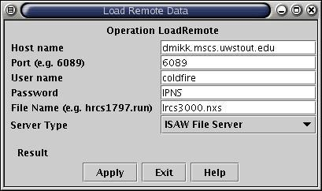

- From the ISAW menu bar, select File, Load Data, Remote,
Test(dmikk-Isaw)
- Enter file name lrcs3000.nxs.
- Wait for "Operation completed" message.
- Exit "LoadRemote" Operation and view dataset
H1_lrcs3000.
- NeXus files can also be loaded through an NDS server, but this is much
slower.
|
 |